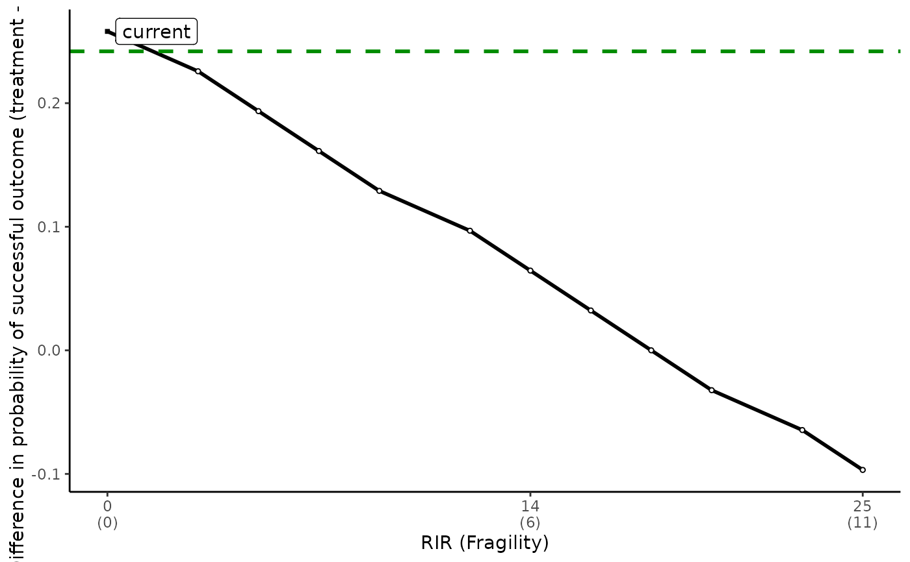

This function generates plots illustrating how the change in effect size is influenced by switching or replacing outcomes in a 2x2 table. It produces two plots: one showing all possibilities (switching) and another zoomed in the area for positive RIR (Relative Impact Ratio).
Usage
tkonfound_fig(
a,
b,
c,
d,
thr_p = 0.05,
switch_trm = TRUE,
test = "fisher",
replace = "control"
)Arguments
- a
Number of cases in the control group with unsuccessful outcomes.
- b
Number of cases in the control group with successful outcomes.
- c
Number of cases in the treatment group with unsuccessful outcomes.
- d
Number of cases in the treatment group with successful outcomes.
- thr_p
P-value threshold for statistical significance, default is 0.05.
- switch_trm
Whether to switch the two cells in the treatment or control row, default is TRUE (treatment row).
- test
Type of statistical test used, either "Fisher's Exact Test" (default) or "Chi-square test".
- replace
Indicates whether to use the entire sample or just the control group for calculating the base rate, default is "control".
Value
Returns two plots showing the effect of hypothetical case switches on the effect size in a 2x2 table.
Examples
tkonfound_fig(14, 17, 6, 25, test = "chisq")
#> [[1]]
#> Warning: Use of `meta$pdif` is discouraged.
#> ℹ Use `pdif` instead.
#> Warning: Use of `meta$RIR` is discouraged.
#> ℹ Use `RIR` instead.
#> Warning: Use of `meta$pdif` is discouraged.
#> ℹ Use `pdif` instead.
#> Warning: Use of `meta$current` is discouraged.
#> ℹ Use `current` instead.
#> Warning: Use of `meta$sigpoint` is discouraged.
#> ℹ Use `sigpoint` instead.
#> Warning: Use of `meta$RIR` is discouraged.
#> ℹ Use `RIR` instead.
#> Warning: Use of `meta$currentlabel` is discouraged.
#> ℹ Use `currentlabel` instead.
#> Warning: Use of `meta$RIR` is discouraged.
#> ℹ Use `RIR` instead.
#> Warning: Use of `meta$pdif` is discouraged.
#> ℹ Use `pdif` instead.
#> Warning: Removed 58 rows containing missing values or values outside the scale range
#> (`geom_label_repel()`).
#>
#> [[2]]
#> [1] "A bend in line indicates switches from the control \n row because the treatment row was exhausted."
#>
#> [[3]]
#> Warning: Removed 11 rows containing missing values or values outside the scale range
#> (`geom_label_repel()`).

#>